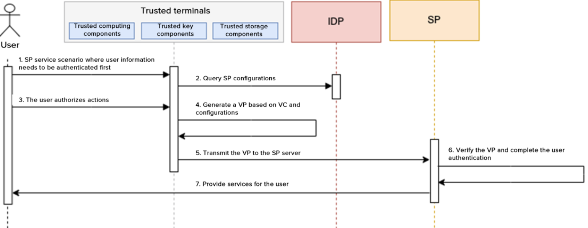

This document specifies the IIFAA decentralized trusted authentication reference model, technical architecture and functionalities, service procedures, security requirements, and personal information protection requirements.
It is applicable to the development, design, deployment, application, and testing certification and other related activities of IIFAA decentralized trusted authentication.
This is an joint publication from IFFAA and W3C Chinese DID & VC Community.
This document specifies the IIFAA decentralized trusted authentication reference model, technical architecture and functionalities, service procedures, security requirements, and personal information protection requirements.
It is applicable to the development, design, deployment, application, and testing certification and other related activities of IIFAA decentralized trusted authentication.
The IIFAA decentralized trusted authentication service reference model is depicted in Figure 1. It comprises four pivotal roles: issuer, service provider, identity provider, and DID holder; two key data types: VCs and VPs; and a foundational infrastructure: IIFAA decentralized trusted authentication infrastructure (cloud-chain).
Figure 1 Reference Model
The IIFAA decentralized trusted authentication service specifically includes:
The requirements for issuers are as follows:
Within the decentralized trusted authentication system, service providers are organizations that offer a range of business services to users. These providers rely on decentralized trusted authentication capabilities and perform services following VC verification. The requirements for service providers are as follows:
The identity provider in the decentralized trusted authentication system offers secure and trustworthy DID registration services to various organizations and users. The requirements for identity provider are as follows:
DID holders can be any organization or individual that holds a DID, such as an ordinary user, issuer, or service provider. They possess private rights to use their DIDs. The requirements for DID holders are as follows:
The IIFAA decentralized trusted authentication system's technical architecture is depicted in Figure 2. This architecture includes underlying storage, a unified service and control platform, the IIFAA ecosystem operation platform, issuers, the decentralized trusted authentication infrastructure, service providers, and user sides.
The underlying storage module is primarily responsible for the public display of DID identity documents on the blockchain, using smart contract capabilities for adding and modifying DID documents. The unified service and control platform manages organizational entities, trust anchoring, and is responsible for VC presentation traceability and statistics. It ensures the trusted entry of VC issuing organizations and the trusted access of identity service providers and conducts VC presentation tracing and auditing for unified management and standardized growth. The IIFAA ecologic operation platform handles VC template management, service scenario management, and service administration. It is responsible for the configuration, application, and approval processes of various VC templates and service scenarios, as well as user service management. Issuers and service providers primarily focus on VC issuance and validation. The decentralized trusted authentication infrastructure offers general SaaS capabilities, such as interactions between identity services and blockchain, user private key escrow, and VC presentation escrow and traceability. The user side is responsible for managing user VCs and presentations, as well as handling decentralized identities on user terminals.
Figure 2 Technical Architecture
Comprising a terminal security foundation layer, core protocol layer, and application service layer, the decentralized trusted authentication system provides services such as decentralized identity and VC information management for users. These components collaborate to secure and maintain the confidentiality of user identities and VCs.
This layer provides security based on the terminal environment. Utilizing the terminal's Trusted Execution Environment (TEE or SE) and SIM card security areas, it offers core security functionalities for higher-level services, including but not limited to secure storage, trusted computing, key management, trusted interactions, and device authentication.
Building upon the security capabilities of the terminal security foundation layer, this layer offers unified decentralized identity management services, including local identity creation and update, authorization, and verification. Additionally, it provides VC management services, such as VC import and revocation, and verifiable presentation management, including issuance, selective disclosure, ZK-SNARK, etc. These services enhance the security and trustworthiness of decentralized identities, underpinning digital identity applications with robust terminal foundation support.
Built on the DID core protocol layer, this layer links decentralized identity infrastructure, issuers, and service providers to offer users complete decentralized trusted authentication capabilities and services.
Decentralized identity management involves storing and using decentralized identities on various user devices, including but not limited to smartphones and servers. The requirements for decentralized identity management are as follows:
Decentralized identity verification refers to the independent verification of identity by any organization within the decentralized trusted authentication system, devoid of reliance on centralized nodes. By leveraging the terminal's trusted environment, it combines verification methods like passwords and facial or fingerprint recognition with technologies such as DPKI and ZK-SNARK. Verification key elements and methods are made public on the blockchain, enabling any organization requiring user DID verification to independently access blockchain identity information and complete identity verification through methods like private key signature validation and ZK-SNARK checks. The requirements for decentralized verification are as follows:
VC management involves centralized storage and management of various VCs, including legal identity credentials, service credentials, and digital asset credentials. This ensures the security and validity of these VCs, preventing illegal use and alteration. The requirements for VC management are as follows:
Based on current scenario requirements, users are provided with a selection and authorization of VC content that meets the criteria. Following the principle of minimal privacy disclosure, users select and authorize the presentation of relevant fields. Then, according to standard protocols, a VP is assembled, and signed with the DID private key, and the signed VP information is presented to the scenario-based service provider for validation. Throughout the entire process, the handling and signing of VCs are carried out within a secure environment on the user side. This is done following the principle of minimal privacy disclosure for both selection and authorization, ensuring the security and privacy of user data. The requirements for VC presentation functionality are as follows:
The requirements for VC issuance are as follows:
The requirements for VC revocation functionality are as follows:
If an issuer requires VCs to be traceable, he/she shall configure the corresponding VC template that supports traceability on the IIFAA ecological operation platform, and define the specific information that needs to be traced.
The identity service requirements are as follows:
The decentralized DID private key escrow service shall be provisioned based on technologies including but not limited to MPC Key Share, TEE, privacy computing, access control and permission management, and multi-factor authentication (MFA).
The VC encryption escrow service shall be provisioned.
The VC traceability requirements are as follows:
The VP encryption escrow capability shall be provisioned. That is, when a user encrypts a VP and submits the encrypted VP to the platform, the platform returns a unique encrypted ID, based on which, SPs can query the encrypted VP.
During VP verification, SPs shall have the capability to verify the signature of the verifiable statement, the signature and status of the VC(s) contained in the verifiable statement, the nature of privacy disclosure, and the subject consistency between the VC and the verifiable statement. If SPs are required to be capable of verifying whether the VP is anti-replay, such capability shall be deployed on the IIFAA decentralized trusted authentication infrastructure, and the anti-replay check shall be executed.
During statement verification, SPs shall have the capability to verify the identities of organizations that issue legal identity credentials.
SPs shall have the capability to verify the identities of VC issuers.
The IIFAA ecologic operation platform shall provide the management of VC templates to constrain the attribute profiles of the VCs issued by issuers. The attribute profile management ensures unified attribute fields of VC templates. An issuer can request issuing VCs in a specified VC template, and after the request is approved, the issuer can issue VCs using this template. SPs can query VCs that are already issued by issuers through scenario configurations, and use the appropriate VCs.
VC templates shall be hierarchical. That is, legal identity VC templates are available for legal identity issuers only, and general identity VC templates are available for both legal identity issuers and general identity issuers. In addition, VC templates should be classified according to different industries, and their application scopes shall be clearly defined.
For this feature, the IIFAA platform:
The service scenario policy configuration function shall be provisioned so that an SP can configure a VC policy for the current scenario using a VC template that has been reviewed and approved by the corresponding issuer. After the IDP operator reviews the scenario, the service scenario can go online for specified VCs.
For this feature, the IIFAA platform:
A list page should be configured to display all online service scenarios so that users can enjoy desired services via the corresponding ingresses.
A list page should be configured to display all online VCs so that users can apply for desired VCs for use.
The unified service and control platform is used for organization registration and authentication, and it can provide the trust anchoring service to establish an organization information chain. It also has certain VC traceability and audit capability.
The platform shall implement the registration and management of organization information, and these organizations may be issuers or SPs. Organizations that issue legal identity credentials shall be certified by an authoritative CA agency, while for those that issue service credentials or digital asset credentials, domain name-based authentication is recommended.
For this module, the unified service and control platform shall have the following capabilities:
Trust anchoring is a process of establishing and maintaining trust on the basis of a reliable entity or mechanism. As a key component for building a trust architecture, trust anchoring provides a verifiable and reliable reference point that assures participants of the confidence level of a system or entity.
Decentralized identity trust anchoring shall enable trusted authentication of issuers and access of legal identity issuers, for unified management, control, and standardized development of organizations including issuers and SPs.
The user identity credential traceability and audit capacity shall be provisioned. For this module, the unified service and control platform shall have the following capabilities:
In the decentralized trusted authentication system, organizations fall into two categories: VC issuers who issue VCs to users, and SPs who, based on the VPs given by users, obtain user information and provide services. The prerequisite for the healthy operation of the decentralized trusted authentication system is that users hold reliable VCs. Therefore, when registering with the unified service and control platform, issuers need to go through an authentication procedure to verify that they are authoritative and reliable. Although the right to use data belongs to users, for healthy data transfer, SPs also need to go through authentication to avoid malicious information collection and data abuse.
Figure 3 Issuer Registration Procedure
The issuer registration procedure is shown in Figure 3. During registration, an issuer needs to submit related information as required by the unified service and control platform. After the information is reviewed, the platform notifies the IDP to generate a DID for the issuer and uploads some information to the blockchain for publicity. Issuers are divided into legal organizations and ordinary organizations. The digital VCs issued by legal organizations are more authoritative and have a wider range of application scenarios. Therefore, legal organizations need to go through a more stringent authentication, for which, CA-based authentication is recommended. For ordinary organizations, domain name-based authentication is recommended. The specific issuer registration procedure is as follows:
Figure 4 SP Registration Procedure
The SP registration procedure is shown in Figure 4. During registration, an SP submits information as required. After the information is reviewed, the IDP generates the corresponding DID and uploads some information to the blockchain. When creating an application scenario, the SP can select a specified issuer as the data issuer. To prevent SPs from maliciously collecting and abusing data, the unified service and control platform or issuer will review the SP's scenario access based on the issuer's data use requirements. After the review, the scenario is configured for future use. The specific procedure is as follows:
The VC issuance procedure is shown in Figure 5. A user creates a DID and applies for a VC on the terminal, and the corresponding issuer authenticates the user's identity and then issues the VC. The issuance procedure is the same for different types of VC, with some differences in user authentication. To issue a legal identity credential, the corresponding issuer authenticates the user's identity through face and ID comparison. To issue a service credential or digital asset credential, the corresponding issuer can authenticate the user's identity through face and ID comparison or based on the user's legal identity credential on the terminal.
Figure 6 VP Procedure
The VC issuance procedure is as follows:
In the above steps, if the terminal already has a DID, ignore steps a) to e), and go to step f) directly.
Figure 5 VC Issuance Procedure
The VP procedure is shown in Figure 6. To enjoy the services provided by an SP, a user needs to apply for a VC from the asset issuer and generate a VP per the SP's service scenario requirements. After the VP is generated, the SP verifies the VP to complete user authentication, and then provides services for the user. The specific procedure is as follows:
Applicable encryption algorithms shall be selected and applied according to specific conditions, and the encryption algorithms for security and reliability shall be used to ensure data confidentiality, integrity, and availability. The supported cryptographic algorithms include:
Note: Symmetric encryption algorithms are mainly used for encrypted data storage and transmission. Asymmetric encryption algorithms are for digital signature and authentication. Message abstract algorithms are for cryptographic hashing and digital signature.
It shall be as per GB/T 41479, in addition to the following requirements:
The requirements are as follows:
The requirements are as follows:
The requirements are as follows:
Personal information and biometric information shall be as per GB/T 35273 and GB/T 40660. Face recognition data shall also comply with GB/T 41819.
Raw biometric data should be anonymized into the irreversible ZK-SNARK to ensure the security and privacy of users' biometric data.
The disclosure involves two methods: selective disclosure and minimum disclosure, with the requirements as follows:
Full protocol standard testing needs to be carried out on DID documents, VCs, and VPs to ensure that: 1) DID documents can present different authentication methods and cross-chain mutual recognition; 2) VCs can prove the attribute or right of some statements of the corresponding holders; and 3) VPs can prove the corresponding holders' identities and present a set of VCs to third parties.
The test method and expected result of the DID document protocol testing are as follows:
The test method and expected result of the VC protocol testing are as follows:
The test method and expected result of the VP protocol testing are as follows:
To protect the security and credibility of decentralized trusted authentication DID keys and user data, full security testing needs to be carried out on the terminal environment where a decentralized trusted authentication system runs, the key algorithms used, and the data protocols adopted.
The test methods and expected results of the terminal environment security testing are as follows:
The test methods and expected results of the key algorithm security testing are as follows:
The test methods and expected results of the data protocol security testing are as follows:
Decentralized trusted authentication is to build a decentralized identity authentication infrastructure with minimum trust, high privacy protection, and efficient operation. Its basic functions include identity registration and management, VC issuance and storage, and VP presentation, based on which, the test requirements are as follows sections.
The test methods and result judgment of the decentralized identity management procedure are as follows:
The test methods and result judgment of the VC issuance and storage procedure are as follows:
The test methods and result judgment of the VP presentation procedure are as follows:
To ensure the user experience for decentralized trusted authentication and the reliability and stability of the system, a performance test needs to be carried out on terminal keys, and performance and stability tests be conducted on the service system.
The test methods and expected results of the key performance security test are as follows:
The test methods and expected results of the performance and stability tests of the service system are as follows:
any terms below overlay with W3C terms?
Fixed layout later.
GB/T 35273 Information security technology – Personal information security specification GB/T 37036 (All parts) Information technology – Biometrics used with mobile devices GB/T 40660 Information security technology – General requirements for biometric information protection GB/T 41479 Information security technology – Network data processing security requirements GB/T 41819 Information security technology – Security requirements of face recognition data IIFAA Local Password-Free Technology Specification 2.0